KALIS TORIK · 主图候选
只审图，不改页面。前 4 张为首选方向，后 7 张为备选；全部按 16:9 首屏裁切检查。
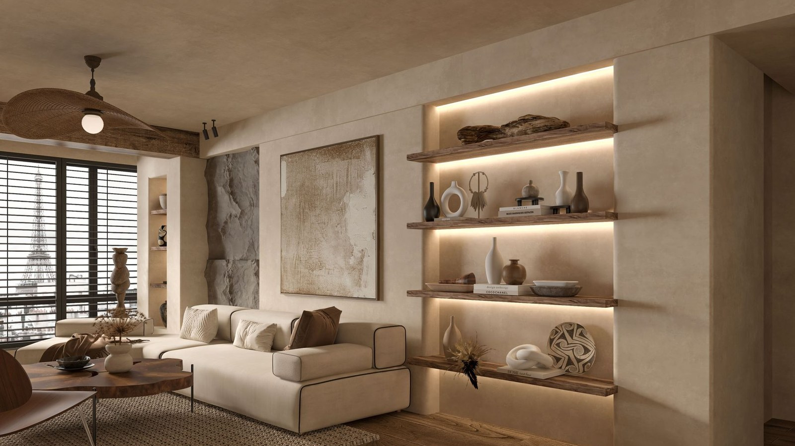
01巴黎落地窗客厅首选
巴黎地标 + 高层落地窗，欧洲居住感最直接；巴黎符号较强。
Pexels · 1600×900 16:9 预览 · 点击看原图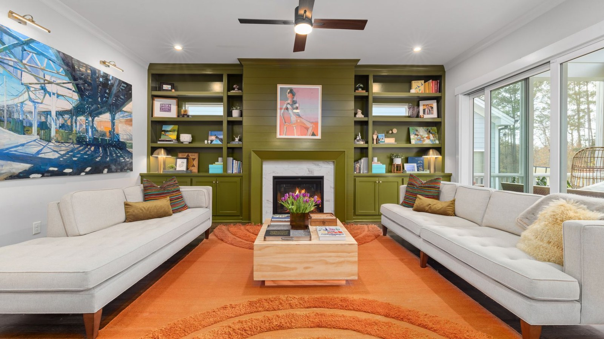
02绿色书墙客厅首选
绿书墙 + 橙色地毯，色彩最完整，编辑感强；元素稍多。
Pexels · 1600×900 16:9 预览 · 点击看原图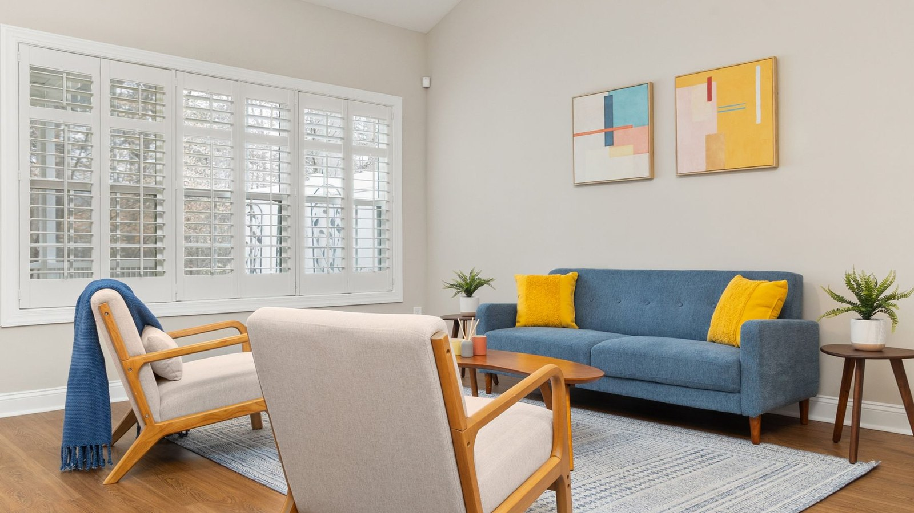
03蓝沙发艺术客厅首选
蓝沙发 + 抽象画 + 奶油墙，现代但不冷，平衡最好。
Pexels · 1600×900 16:9 预览 · 点击看原图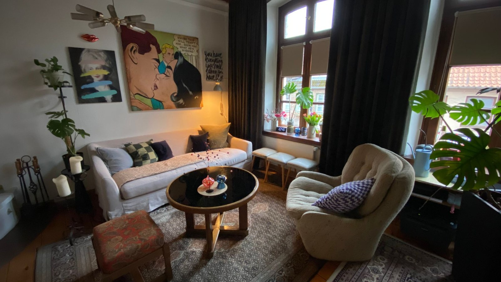
04明亮开放式客厅首选
开阔、明亮、绿岛台 + 艺术画，空间感最舒服，最耐看。
Pexels · 1600×900 16:9 预览 · 点击看原图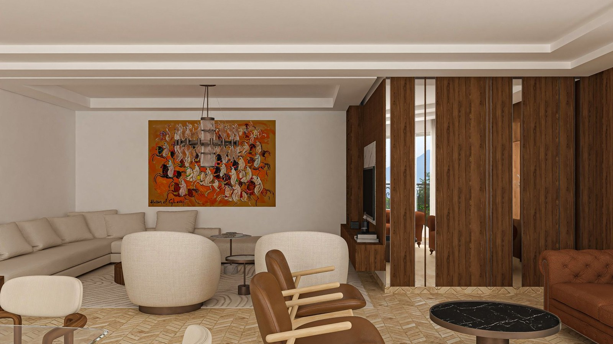
05暖木色会客厅备选
木色、灰绿、白纱帘，温暖高级；略偏酒店感。
Pexels · 1600×900 16:9 预览 · 点击看原图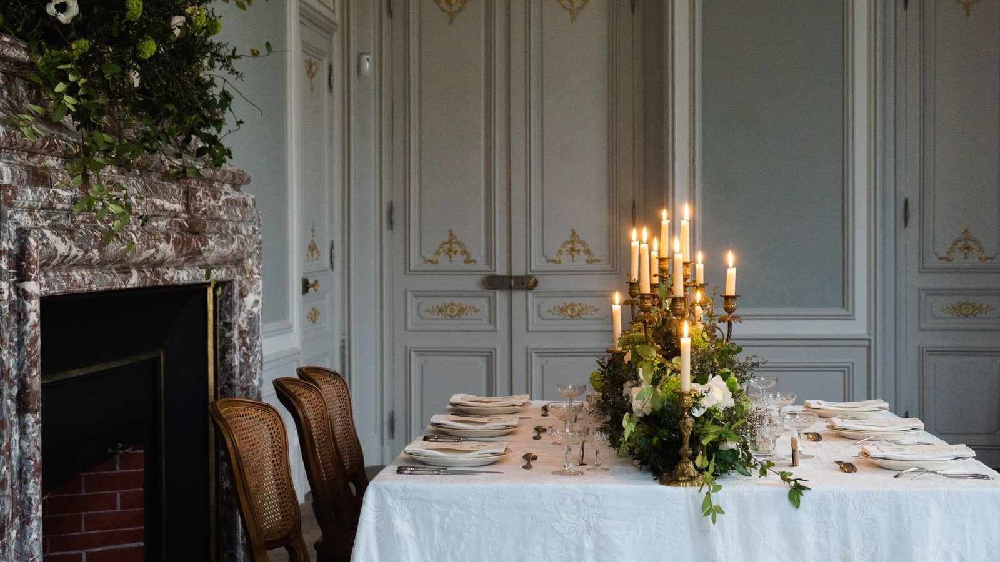
06巴黎烛光餐厅备选
巴黎餐厅 + 烛光 + 彩色餐椅，氛围最好，适合第二屏。
Pexels · 1600×900 16:9 预览 · 点击看原图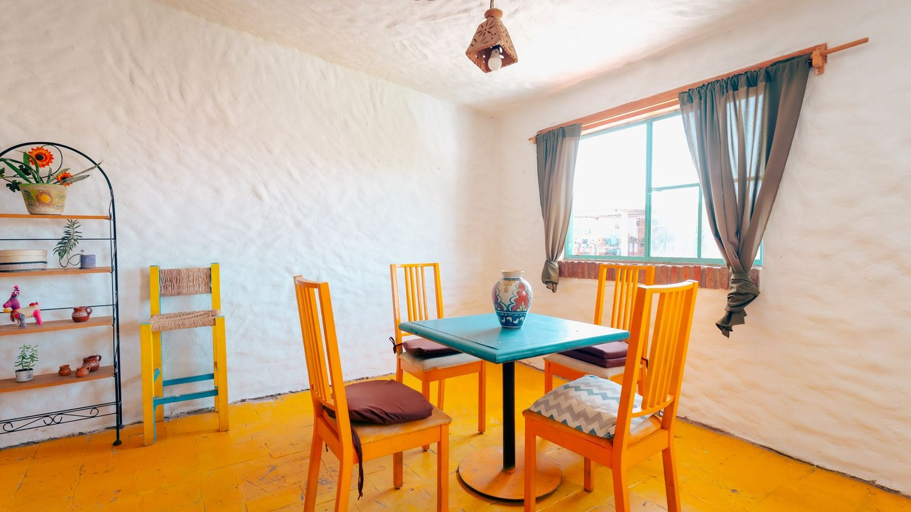
07彩色餐椅餐厅备选
彩色餐椅 + 阳光窗，活泼上镜；细节稍多。
Pexels · 1600×900 16:9 预览 · 点击看原图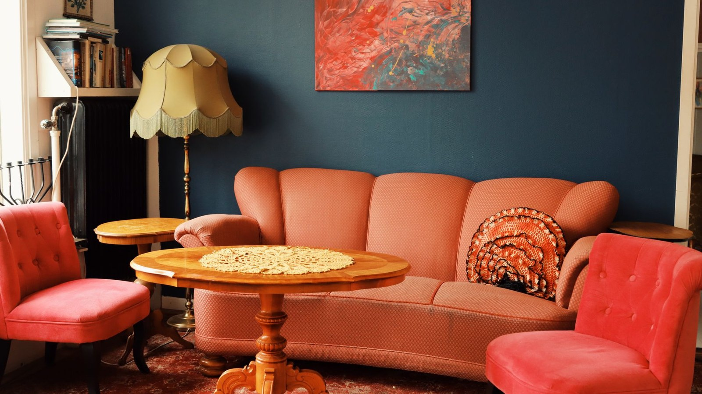
08粉色天鹅绒会客角备选
粉色天鹅绒 + 灰墙 + 复古电话，个性强，适合生活方式场景。
Pexels · 1600×900 16:9 预览 · 点击看原图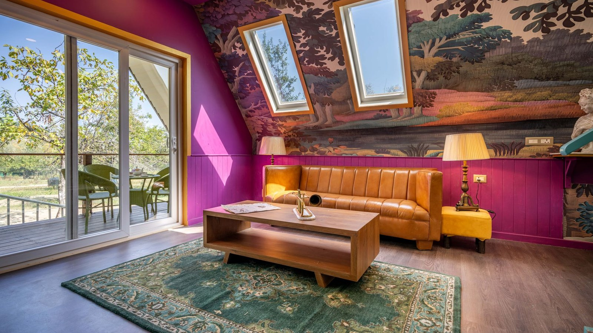
09A字顶艺术空间备选
A字顶 + 彩色画墙 + 皮沙发，艺术感最强；不太像大众住宅。
Pexels · 1600×900 16:9 预览 · 点击看原图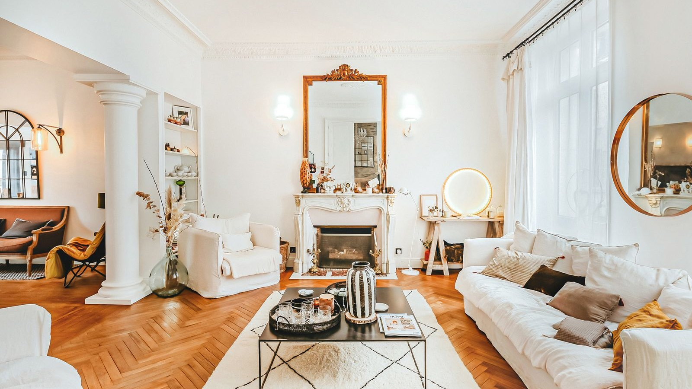
10法式壁炉客厅备选
法式壁炉 + 明亮白墙，稳妥耐看；色彩相对克制。
Pexels · 1600×900 16:9 预览 · 点击看原图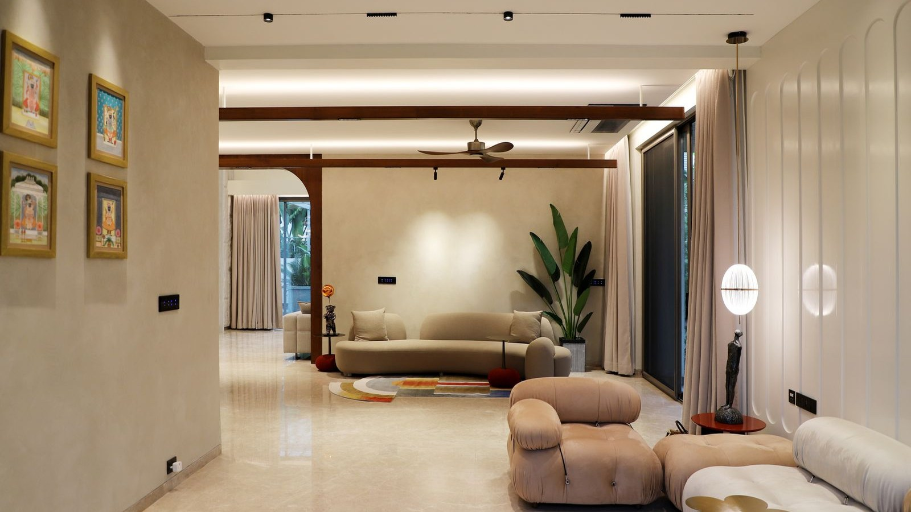
11米白艺术客厅备选
米白 + 黑色饰边 + 黄色单椅，克制贵气；色彩不算丰富。
Pexels · 1600×900 16:9 预览 · 点击看原图筛选口径：无人、无水印、无品牌、亮色、非暗调、非明显 3D 效果图；产品保持原色。国内通道本轮筛了 64 张高分辨率候选，0 张达到首屏标准，主要问题是 1080 宽、水印、效果图、授权不明，因此没有混入。点击任一图片可看原图。